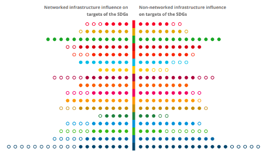
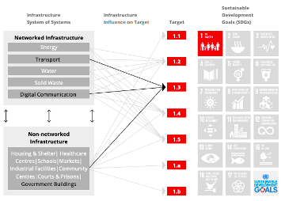
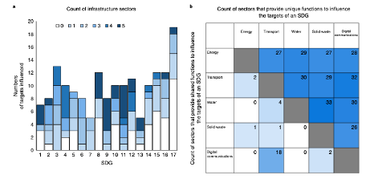

This mini-lecture will delve deeper into the links between infrastructure and sustainable development through the range of services it provides to enable development outcomes, demonstrating these links with examples. The lecture will consider the complementarity and substitutability of services provided by various infrastructure types within the infrastructure system.
To describe the concept of an infrastructure service and to give examples of the multiple ways it can influence development targets
To differentiate between direct and indirect influences of infrastructure on development
To provide examples of when infrastructure may provide complementary or substitutable services.
Infrastructure systems, including energy, transport, telecommunications, water, and waste management, provide essential services for the well‐being of people, the economy, and the planet (Adshead et al. 2021). To ensure that infrastructure is built most effectively and efficiently, policymakers should establish long-term visions for sustainable national infrastructure systems, informed by the Sustainable Development Goals (SDGs), and develop adaptable plans that can demonstrably deliver their vision (Thacker et al. 2019). This will require a deep understanding of what services infrastructure systems provide, and how these can be combined and leveraged through policies, projects and investments.
This lecture will introduce the concept of infrastructure services and how they enable development outcomes. Recent research to define linkages between infrastructure and the SDGs will be discussed, including the extent to which infrastructure sectors can provide unique or substitutable services in the pursuit of SDG target achievement.
To address infrastructure’s impact on sustainable development it is important to understand the concept of infrastructure services and how they are linked to social, economic and environmental outcomes. Infrastructure services refer to the means by which a system of physical infrastructure assets can deliver on societal needs. Some researchers consider an infrastructure service to refer to the resource provided by the sector itself, such as energy, water, or transportation (Briceño-Garmendia, Estache, and Shafik 2004).
However, more commonly, infrastructure services are defined in terms of end-uses to individuals, households, and businesses (Cullen and Allwood 2010; Knoeri, Steinberger, and Roelich 2016). For example, energy infrastructure provides services in the form of lighting or thermal comfort (heat or cooling). Water infrastructure provides hygiene services, while transportation infrastructure provides accessibility (e.g. to education, employment, or recreation) and communication. This definition implies that we can provide the same service using several means, for example: the same lighting service can be provided by an energy-efficient lightbulb, using fewer watts, than a less-efficient lightbulb. This will be important later on when we consider how we can assemble infrastructure portfolios most efficiently to meet a demand for infrastructure services.
Understanding how the provision of these services links to development outcomes such as health, education, equality, justice, and economic growth is addressed with a closer examination of the SDG framework.
Although infrastructure is the focus of SDG 9 ("Industry, Innovation and Infrastructure"), it is recognised as having a much wider range of development benefits. The extent to which infrastructure systems, and the services they provide, influence sustainable development outcomes, can be defined using the SDG targets.
Figure 1.3.1 estimates the extent to which infrastructure either directly or indirectly influences the SDGs, implying that the achievement of the target will be enhanced through the provision of improved infrastructure services that the infrastructure delivers. These may be direct or indirect:
Direct influences on an SDG target include cases in which the SDG target is described directly in terms of the service that an infrastructure system provides, for example, target 7.1 (By 2030, ensure universal access to affordable, reliable and modern energy services).
Indirect influences on an SDG target include cases in which the SDG target is not described specifically in terms of the service that an infrastructure system provides, but for which evidence indicates that achievement of the target will be enhanced through the provision of improved infrastructure services. For example, target 3.9 (By 2030, substantially reduce the number of deaths and illnesses from hazardous chemicals and air, water and soil pollution and contamination) can be indirectly influenced by improved energy, transportation, water and waste services.
Overall, networked infrastructure systems such as energy or road networks or water supply systems are found to influence all 17 of the SDGs, including 121 of the 169 targets (72%) (Thacker et al. 2019).

Figure 1.3.1: Summary of the influence of infrastructure across all SDGs. Circles represent the individual targets of each SDG. Circles are coloured when they can be influenced by at least one type of infrastructure (Thacker et al. 2018)
In addition to providing for people in their homes, the services from networked infrastructure systems support other non-networked infrastructure systems that are critical for the functioning of society. These non-networked systems are comprised mainly of a type of building or facility which supports the delivery of a service, such as hospitals, schools, government buildings, industrial facilities, or community centres (Thacker et al. 2018). As shown in Figure 1.3.1, these non-networked infrastructures increase the number of targets influenced beyond that of networked infrastructure, with an overall influence covering 90% of SDG targets.
Figure 1.3.2 gives a visual representation of how services provided by networked and non-networked types of infrastructure can contribute to the achievement of SDG 1 (No Poverty). As a specific example (Thacker et al. 2018), we can assess infrastructure’s potential influences on target 1.3 (to implement nationally appropriate social protection systems and measures for all), which may enhance achievement of the target through services including:
Effective information management systems (digital communications)
Access to all communities in order to aid data collection (transport)
Services provided by non-networked facilities such as government buildings, which are responsible for managing social protection systems.
By understanding the intricate linkages between all types of infrastructure and specific outcomes enabled by the services they provide, we can better assess the capability of a particular infrastructure project, investment, or policy to deliver on sustainable development. This may imply wider impacts than the project type suggests. For example, the rehabilitation of a road (transport sector) may be undertaken so as to improve water and waste sector outcomes through the incorporation of drainage systems and waste management connectivity.

Figure 1.3.2: Graphical representation of the influence of networked and non-networked infrastructure on the targets of SDG 1. The specific influences related to Target 1.3 are highlighted in black (Thacker et al. 2018)
It is useful to understand the degree to which infrastructure services can be provided by one or more sectors, which can enable more efficient infrastructure planning suited to a particular context.
Infrastructure sectors may provide unique functions (services), that is, individual and independent contributions toward achievement of the target, which may complement one another. By influencing the target in different ways, the impacts of each sector toward target progress are additive and non-substitutable. For example, target 4.a (Effective learning environments for all) can benefit from contributions from the energy, water, waste and digital communications sectors, which each provide a unique contribution to improving conditions in schools and other education facilities (Thacker et al. 2019).
Sectors that provide shared functions with regard to a certain outcome will achieve the same target, but in different ways. This overlap provides decision-makers with a choice of how to influence certain targets and can add redundancy or build systemic resilience. For example, for target 6.1 (Safe and affordable drinking water) the secure provision of safe drinking water can be provided locally through investments in water infrastructure such as water pipes or by means of trucks; thus, a reliable road network to access these communities can substitute for physical water infrastructure (Thacker et al. 2019).
Figure 1.3.3 highlights these functional interdependencies between networked infrastructure sectors. While SDG 7 requires contributions from only two sectors, SDG 11 requires all five sectors to achieve its targets. Furthermore, the transport and digital communications sectors show a high degree of substitutability, while solid waste provides most of its contributions as a unique or complementary infrastructure service.

Figure 1.3.3: a. Counts of the number of different infrastructure sectors that influence the SDG targets (where 5 is the maximum) that are identified as being able to influence different targets of the SDGs. b. Counts of the number of interdependencies, which are identified when more than one sector can influence a target. Interdependencies are classified as unique when different sectors influence a target in a different way (top right) and shared when different sectors influence a target in the same way (bottom left) (Thacker et al. 2019)
Infrastructure services can influence development targets in many ways, both directly and indirectly. They enable a wide range of development outcomes and are integral to achieving the Sustainable Development Goals. By disentangling the complex linkages between infrastructure services and development, we can determine the broader societal impact of an infrastructure project or intervention. This includes understanding whether infrastructure services are provided in a complementary or substitutable way across sectors, which can help planners adapt infrastructure planning to a national or regional context.